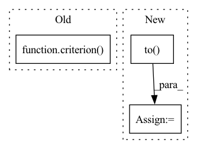

Pattern ID :34454

Before Change
def loss_estimator(pred, truth):
loss_ = criterion(pred, truth, target = torch.tensor(1) )
return torch.mean(loss_)
After Change
def loss_estimator(pred, truth):
mask = truth.ge(1).type(torch.FloatTensor).to(device)
loss_ = criterion(pred, truth) * mask
return torch.mean(loss_)
In pattern: SUPERPATTERN
Frequency: 3
Non-data size: 3
Instances
Fragment ID: 98805907
Project Name: ai4bharat/indiannlp-transliteration
Commit Name: a379e4be3fc7e5b4f5b7e4d49fe9e1df3850a6f9
Time: 2020-07-21
Author: josephgeobenjamin@gmail.com
File Name: tasks/corremb_xlit_runner.py
M Class Name: AnonimousClass
N Class Name: AnonimousClass
M Method Name: loss_estimator(2)
N Method Name: loss_estimator(2)
M Parent Class:
N Parent Class:
M File Name: tasks/corremb_xlit_runner.py
N File Name: tasks/corremb_xlit_runner.py
M Start Line: 113
M End Line: 113
N Start Line: 90
N End Line: 91
'>
Before Change
tokenized_cap = tokenizer(caption, padding=True, return_tensors="pt")
tokenized_cap = {k: v.to(device) for k, v in tokenized_cap.items()}
probs = model(frames, tokenized_cap)[:, :-1, :]
loss = criterion(probs, tokenized_cap["input_ids"], tokenized_cap["attention_mask"])
loss.backward()
optimizer.step()
After Change
for src, tgt, src_padding_mask, tgt_padding_mask in tqdm(train_dataloader):
src = src.to(device)
tgt = tgt.to(device)
tgt_padding_mask = tgt_padding_mask.to(device)[:, :-1]
src_padding_mask = src_padding_mask.to(device)
tgt_input = tgt[:, :-1] // N T-1
'>
Fragment ID: 98805905
Project Name: kamino666/video-captioning-transformer
Commit Name: 6560c19b1b21061f61b9959ba32fbc20aa4d44a0
Time: 2021-10-01
Author: 516015417@qq.com
File Name: train.py
M Class Name: AnonimousClass
N Class Name: AnonimousClass
M Method Name: train_epoch(3)
N Method Name: train_epoch(6)
M Parent Class:
N Parent Class:
M File Name: train.py
N File Name: train.py
M Start Line: 128
M End Line: 151
N Start Line: 53
N End Line: 79
'>
Before Change
rawscores = output.squeeze(-1)
proba = torch.softmax(rawscores,-1)
loss = torch.mean(criterion(proba,K[:,:,:,1])*input1[:,:,:,1])
//loss = criterion(proba,K[:,:,:,1])
helper.update_meter("train", "loss", loss.data.item(), n=1)
After Change
// measure data loading time
helper.update_meter("train", "data_time", time.time() - end, n=batch_size)
data = data.to(device)
target_deviced = target.to(device)
output = model(data)//,input2)
raw_scores = output.squeeze(-1)
'>
Fragment ID: 98805915
Project Name: mlelarge/graph_neural_net
Commit Name: a776ae15386c8aa8120f889acb880a63fcea74b6
Time: 2021-03-22
Author: amaury.triboulin@gmail.com
File Name: trainer.py
M Class Name: AnonimousClass
N Class Name: AnonimousClass
M Method Name: train_triplet(9)
N Method Name: train_triplet(9)
M Parent Class:
N Parent Class:
M File Name: trainer.py
N File Name: trainer.py
M Start Line: 15
M End Line: 41
N Start Line: 13
N End Line: 40